Вечер 1
Час первый. Дверь за спиной
Войти с гостями, понять, что двери больше нет, разобрать свечи, решить с Книгой порога и встретить удар в час всем вместе.
Открыть сценарий →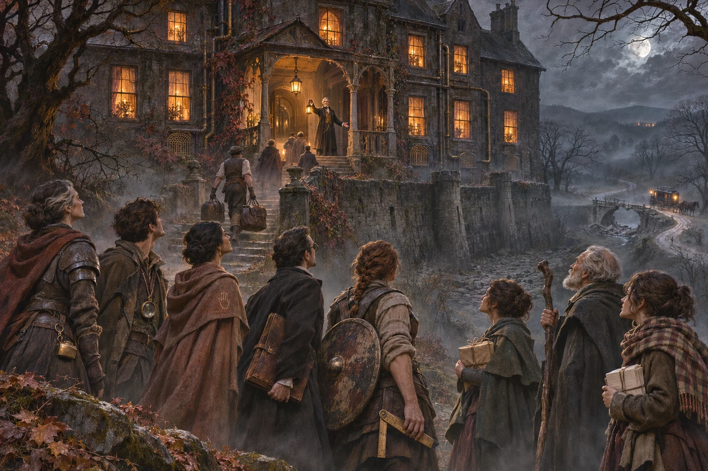
Ночная карета застряла у размытого моста, и единственный свет на склоне — окна усадьбы над сухим рвом. Хозяин встречает вас на крыльце с фонарём. В полночь вы входите в вестибюль с другими пассажирами — и дверь за спиной становится гладкой стеной с обоями. До рассвета шесть часов. Каждый час бьют часы, и дом делает ход: прячет двери, гасит свечи, забирает людей. Выход один — вниз, и спускаться придётся, когда за вами пойдёт весь Хор.
Перед чтением вступления сверьте место героев, присутствующих людей и предметы с итогом прошлого вечера. Если условия встречи отпали, сыграйте последствия там, где находится партия. Событие по расписанию может произойти за кадром. Герои узнают о нём от тех, кто был на месте.
Полвторого пробьёт и в пустом зале. Погасите все свечи и отметьте, где находится первый гость по очереди дома. Дайте слово его ближайшему спутнику. Кто рядом может протянуть руку, а кто узнает об исчезновении лишь при следующей перекличке?
Сверьте имена у ворот. Уже вышедшие могут ждать или искать помощь снаружи. В доме остаются только записанные внутри; посчитайте спасшихся в конце поимённо, один раз на человека.
Позвать остальных к порогу согласны, ужинать и обыскивать дом отказываемся. Ждём у порога и называем вышедших. Зовём людей по именам и ждём у последнего доступного выхода. Кто не дошёл до нас к рассвету, остаётся пропавшим.
Считаем тарелки до и после первого исчезновения и слушаем стену там, где кто-то отвечает. Доступные свидетельства — Тарелок на одну меньше, Тёплые обои. Недостающую тарелку убрали до удара. Голос из стены даёт основание искать пропавшего живым. Предлагаем соседу опознать голос до нового удара. Один из гостей узнаёт голос за обоями. С этого момента выбираем, кого искать в оставшиеся часы; дом больше не нужно разоблачать второй раз.
За время отступления дом забирает одного гостя, его место пустеет. Выносим список к выходу и оставляем строку для пропавшего. Записываем имя и ведём соседей к выходу. Утром они решают, кому сообщить о пропавшем; нового человека за стол не подставляем.
6 сессий по Около трёх часов десяти минут: пять сцен и перерыв 15 минут после третьей; обычная сцена 35 минут, сцена с боем длиннее за счёт соседних; в последний вечер три сцены до шести — 55 минут вместе, бегство по лестнице — две сцены по 60 минут (при шести игроках оно обычно укладывается в 100 минут, при восьми занимает все 120); обсуждение границ перед первым вечером. Подготовленные герои — уровень 3. Прочитайте первую сессию, выберите состав и передайте игрокам отдельную страницу героев.
В мастерской создайте или откройте свой черновик, выберите импорт пакета и укажите package.json либо нужный файл из variants. Проверьте сценарий и состав в предпросмотре; активацию подтверждает ведущий. Сюжетные развилки, часы давления и жанровые действия разрешаются ведущим — они не становятся автоматически сыгранными событиями.
Пакеты разных размеров используют первые N героев в порядке карточек. Дополнительные герои дают новые роли, но не обязательные ключи к истории. Выбор произвольного состава требует правки черновика и повторной проверки.
Тёплый дом, в котором страшно дышать. Капли воска на пальцах, счёт ступеней, многоголосие в трубах. Ужас — от присутствия, потери и выбора: кого держать за руку на получасовом ударе. Не от анатомии.
Войти с гостями, понять, что двери больше нет, разобрать свечи, решить с Книгой порога и встретить удар в час всем вместе.
Открыть сценарий →Пережить первую трапезу в половине второго: понять, кого возьмёт дом, удержать круг свечей и не отдать второго.
Открыть сценарий →Понять, что дом говорит голосами забранных, научиться звать голос полным именем и пережить половину третьего, никого не оставив одного.
Открыть сценарий →Спуститься в Склеп Урмов и подняться до половины четвёртого, узнать, кто такой Гаспар и где спуск, и не оставить наверху никого одного.
Открыть сценарий →Собрать разведённых до половины пятого, вывести отрезанных из сада и узнать у часов и у Ирины, как открывается спуск.
Открыть сценарий →Дожить до шести, собраться у часов с огнём и спуститься по Лестнице Счёта, пока свеча в часах не догорела до шестой метки, — вывести как можно больше людей.
Открыть сценарий →
Высокий хозяин лет пятидесяти с виду, серебряные виски, старый безупречный сюртук, карманные часы на цепочке, на которые он никогда не смотрит. Руки тёплые и сухие.
Хозяин усадьбы. Встречает гостей с фонарём, просит расписаться в Книге порога, накрывает стол и всегда точно называет время.
Чтобы до шести все гости остались в доме — так хочет дом. Глубже, своим голосом в стене: чтобы кто-нибудь прошёл ворота.
Первый забранный: сто девятнадцать лет назад построил дом, и в первую же ночь дом взял его. Тело — рот дома; его собственный голос — в Хоре. Когда часы бьют шесть, тело первым уходит вниз по Лестнице Счёта и встаёт у ворот Привратником.
Не лжёт о времени; правил дома не называет ни прямо, ни намёком — отвечает временем. Своего полного имени не произносит: «Гаспар». До шести никого не трогает и никому не мешает. Приманок не принимает, на просьбы не отвечает.
Его голос в стене, названный «Гаспар Урм» с 02:00, говорит правду о воротах: «Я — ворота внизу. Огонь меня держит. Собьёте половину меня — пропущу всех». Тело на своё полное имя отвечает временем — «Без четверти…» — и на миг закрывает глаза.

Светлая трость, плотная дорожная шаль, в кармане свёрток из платка. Держит свечу низко и всё время смотрит на большие часы.
Пассажирка кареты. Ещё до моста попросила остановить у Урма: у неё приглашение.
Выйти живой и в этот раз никого не оставить на лестнице; услышать брата один раз.
Тридцать один год назад провела здесь такую же ночь с братом Иоахимом. На второй площадке Лестницы Счёта его схватил Хор; она не знала, что надо звать по имени, и побежала. Вышла одна, с огарком. Этой осенью получила приглашение почерком Иоахима и приехала, зная куда.
Отвечает на прямой вопрос о том, что видела, но не рассказывает всего сразу; о брате говорит, когда услышит его голос. Не просит героев рисковать за неё. Огарок отдаёт только тому, кто пообещает идти последним.
О половинах и запасных говорит, если спросить, что она знает о доме. Услышав из стены «Ира, ты опять вперёд?», кричит «Иоахим Вард!» — и стол узнаёт правило имени.

Поварской фартук поверх дорожного платья, мука на запястьях, тяжёлая связка ключей на поясе.
Кухарка усадьбы. Приходит днём из Нижнего Брода; сегодня дорогу залило, и она осталась.
Выйти; а пока не вышли — накормить всех и держать вместе за одним столом.
Двенадцать лет Гаспар каждый вечер в одиннадцать говорил ей «домой», и она уходила. В тетради кухни она писала, на сколько человек ужин и на сколько завтрак; завтракало всегда меньше, а она не спрашивала почему — нужна была плата. Сегодня он впервые не сказал «домой».
Не даёт свечей тем, кто кричит, пока не пообещают держаться вместе (без броска). Не лжёт о тетради, если её открыть при ней. В Книге порога не расписывается: «Я прислуга, я не гость».
Расставляя тарелки, считает вслух и сбивается: «Он велел — на одну тарелку меньше, чем вас». Тетрадь открывает, если спросить, почему она ни разу здесь не ночевала.

Строгое дорожное платье, книжка с карандашом на шнурке. Всех называет полностью, по имени и фамилии.
Бывшая управляющая дорожным приютом у Верхней заставы; приют закрыт два года. Пассажирка кареты.
Узнать, что стало с девятью путниками, которых она сюда отправила, и выйти, всех пересчитав.
Четыре года, когда приют был полон, она отправляла лишних путников в Дом Тёплого Порога по печатной карточке Гаспара «ночлег без платы». Ни один не написал. Она закрыла приют, а не спросила. Сегодня попросила кучера остановить у моста нарочно.
Не исповедуется и не просит прощения; на обвинение молча достаёт список. На каждом ударе считает людей вслух.
Показывает список, если спросить, зачем она здесь, и называет девять имён полностью — так стол слышит, как звучит полное имя. Всех живых тоже зовёт полностью: «Тадеуш Рен, сядьте».

Инженерный жилет, лупа на лбу, пальцы в часовом масле. Говорит о колёсах и воздухе, как другие о погоде.
Часовщик-инженер. С полудня в доме: чинит большие часы вестибюля по договору.
Понять, как идут часы без пружины, — и выйти раньше, чем поймёт до конца.
У часов нет ни пружины, ни гирь: маятник качает воздух из труб. Днём он открывал шкаф ключом — за маятником пустая холодная шахта без ступеней и голоса снизу. Договор подписан «Г. Урм» чужой рукой, плата втрое; он взял — нужны были деньги.
Говорит о воздухе и колёсах, а не о призраках, но не спорит с тем, что слышит. Ключ от шкафа отдаёт тому, кто скажет, зачем он.
Показывает трубы: «Слышите? Это не ветер. Это трубы, и в трубах — люди». О кулачке говорит, если спросить, что открывает шкаф: «В шесть кулачок поднимает защёлку. Я проверял. Дважды».
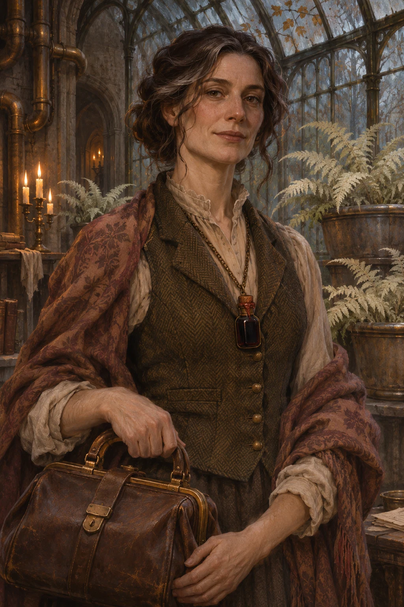
Врачебный саквояж, шерстяной жилет, флакон тёмного стекла на цепочке, пробка залита воском.
Врачевательница из Нижнего Брода, пассажирка кареты. Помогает раненым, если попросят.
Чтобы все дожили до утра и чтобы никто не кричал.
Во флаконе сонные капли. Три года назад при пожаре в лечебнице она усыпила кричавшего больного, чтобы палата не поддалась панике; его не успели вынести. Здесь она готова сделать это снова и знает цену.
Капель без просьбы того, кто понесёт спящего, не даёт. Дать их человеку против его воли в первый раз отказывается, во второй соглашается и называет цену вслух. На героя против воли его игрока капли не действуют никогда. Диагнозов героям не ставит.
Предлагает капли, когда кто-то в панике: «Могу дать капли. Он уснёт и замолчит. Но нести его будете вы».
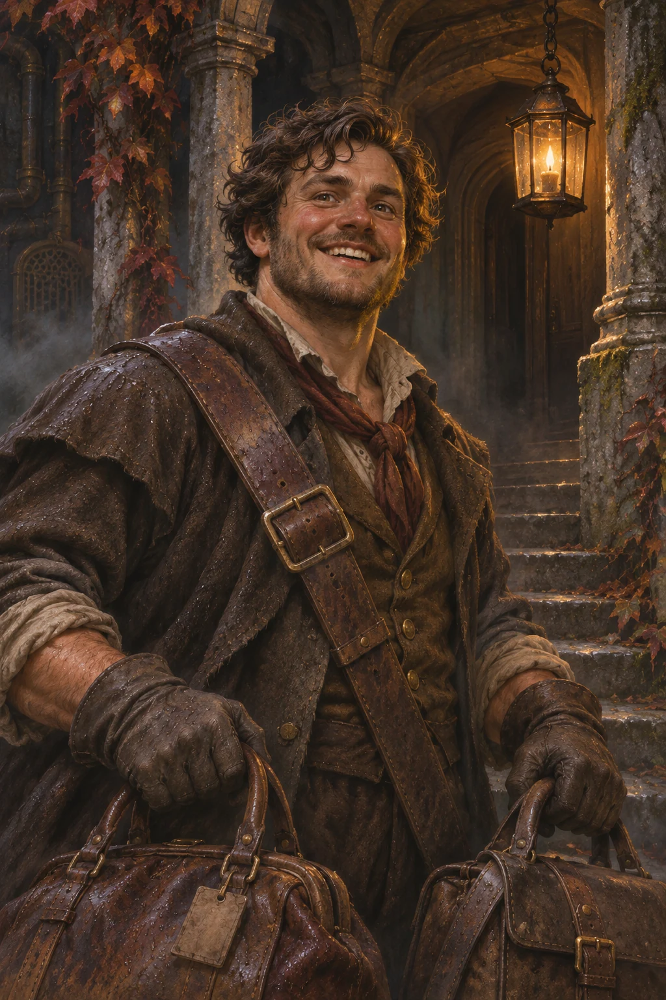
Плотные рабочие перчатки, широкая лямка через плечо, чужие саквояжи в обеих руках.
Носильщик почтовой кареты; привёл пассажиров от размытого моста к усадьбе.
Довезти пассажиров до Нижнего Брода к утру, не потеряв ни саквояжа, ни человека.
В конторе ему велели у Урма не останавливаться, что бы ни было. Он остановил: видел свет и нашёл в почтовом ящике кареты карточку «ночлег без платы». Решение было его, и он считает, что за всех отвечает.
Не уходит, пока все не вошли; чужие вещи не бросает. По обычаю почтовых карет вписывает в Книгу порога первым только себя и передаёт перо по кругу: остальные расписываются сами, в том порядке, в каком берут перо.
Про запрет конторы рассказывает, если спросить, почему он остановил здесь: «Кучер велел не останавливаться у Урма. А я остановил».
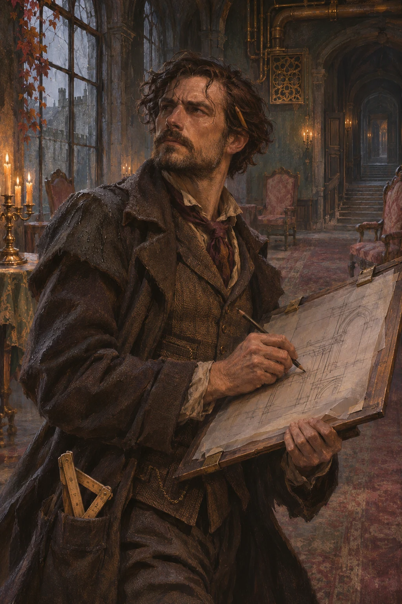
Архитекторский жилет, складная линейка, планшет с калькой, карандаш за ухом. Чертит на ходу.
Архитектор, пассажир кареты. В усадьбе сразу начинает обмерять комнаты шагами.
Понять, как стоит дом, и выйти; пока чертит, он не боится.
С детства не выносит полной темноты: в ней кричит и не может остановиться — и знает это. Чертит, чтобы руки были заняты.
В планах не лжёт: неизмеренное ставит пунктиром. В темноте кричит, если его никто не держит за руку; капли Эвелины его усыпляют.
Отдаёт план, если попросить. Во второй раз сам кладёт два листа рядом: «Часы — на месте. Всё остальное сдвинулось».
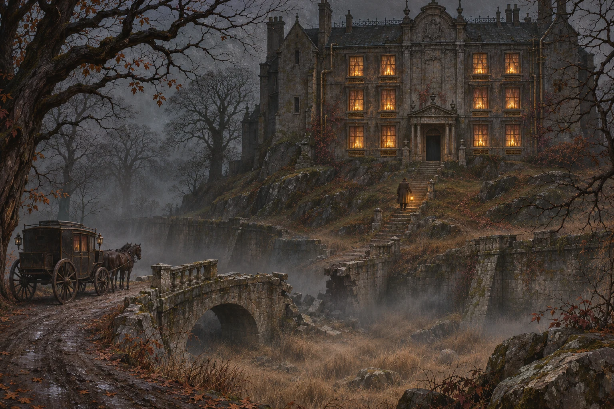
Каменистый склон, голые вязы и высокая усадьба над давно пересохшим рвом старой крепости. По фасаду двенадцать тёплых окон, крыльцо посередине. Внизу у дороги — размытый мост через ров, у моста стоит почтовая карета.

Медные поддоны под мокрыми плащами, пюпитр с толстой Книгой порога, напольные часы в два человеческих роста; маятник ходит за мутным стеклом, и в шкафу часов тянет холодом. Пахнет воском и мокрой шерстью. Там, где была входная дверь, — гладкие обои с узором из лестничных перил.

Длинная галерея с дверями без номеров по обе стороны. В простенках вентиляционные решётки; из них тянет тёплым воздухом и далёким многоголосием. На порогах старые капли воска, а паркет за ними почти не стёрт.

Длинный стол через южную половину зала, буфеты, высокие спинки стульев, шандалы с восковыми муляжами. Холодный камин в южной стене. Северная стена в светлых обоях с узором из свечей, в северо-восточном углу дверь на кухню; под полом гостиной иногда вздыхают трубы.
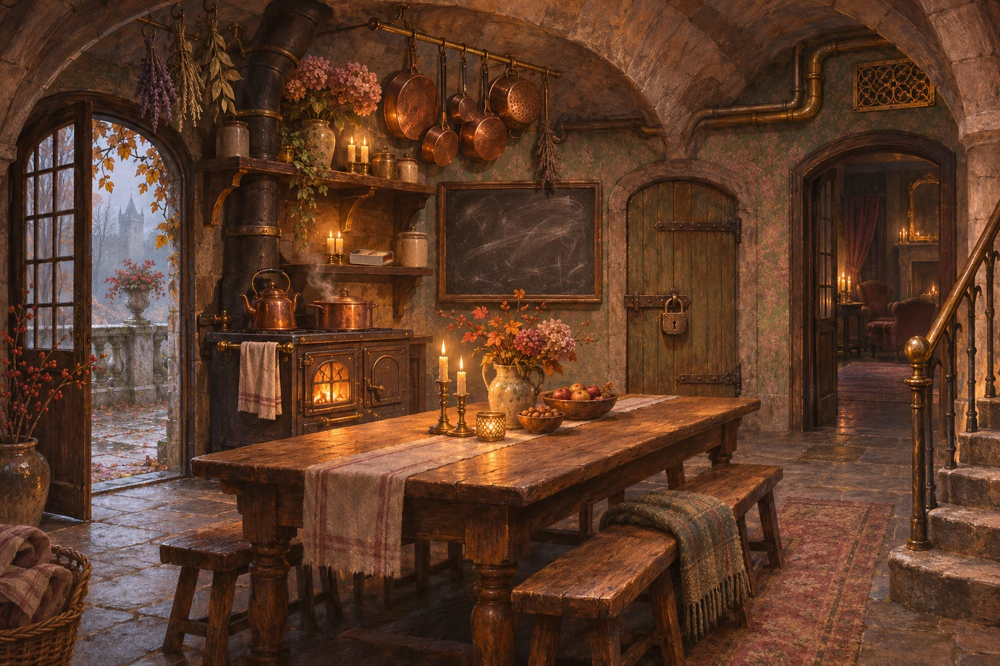
Низкие своды, тёплая печь, длинный стол, меловая доска, на которой хозяин пишет время. Свечная кладовая на замке, коробок спичек на полке у печи. Одна дверь ведёт на террасу, другая — в гостиную.

Верстак, разобранные часовые колёса, модель колеса боя. По стене медные трубы с бирками комнат уходят в пол и тихо гудят. Над верстаком на гвозде висит латунный ключ.

Стеклянная крыша, кадки с бледными папоротниками, скамьи вдоль дорожек. Стекло снаружи заклеено обоями, и изнутри видна их бумажная изнанка. Две двери: северная стеклянная и южная деревянная.

Дверь из кухни открывается на террасу под нарисованным небом: облака на потолке, каменные перила, ровный неживой свет. За перилами снова видна кухня, и любая дверь отсюда ведёт обратно в неё.

Три широкие ступени к дороге и фонарь на цепи. С крыльца виден залитый мост через ров и карета у него; ворота усадьбы открыты.
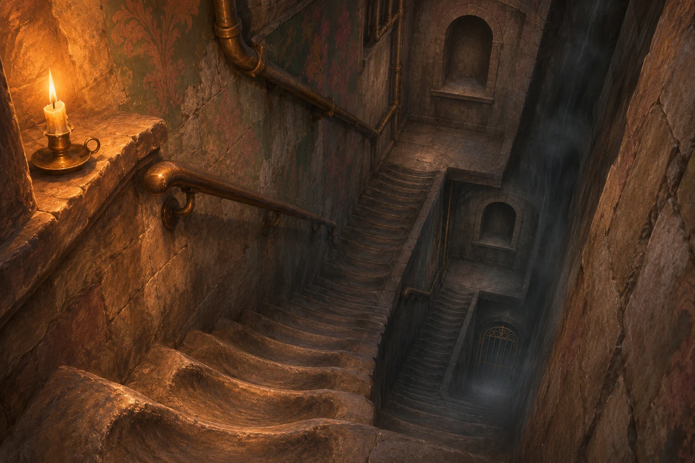
Узкая каменная лестница в шахте за маятником больших часов: три марша, две площадки с пустыми нишами в стене, внизу низкие ворота. Ступени стёрты посередине, будто по ним шли все сразу; снизу тянет холодом и сухой травой.

Сводчатый склеп под галереей: ниши в два ряда, в каждой огарок с холодным светом и табличка с именем. На восточном конце алтарь с ящиком; в восточной стене решётка в соседнюю шахту. Здесь слышно, как поют стены.
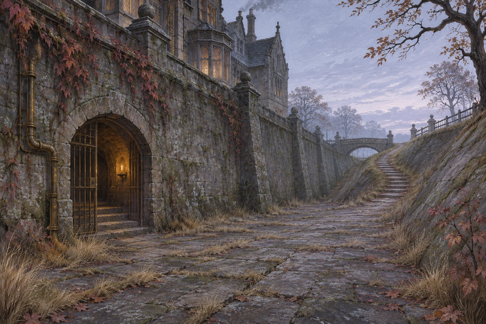
Каменное дно давно пересохшего рва под стеной усадьбы, сухая трава, низкие ворота в стене. Вверх по склону — дорога к мосту.

Два деревянных ящика по дюжине белых свечей в вощёной бумаге. Пахнут мёдом и холодом кладовой; кладовая заперта, ключ на поясе у Брониславы.
24 обычные свечи. Бронислава раздаёт их в вечере 1 тем, кто обещает держаться вместе, и не даёт тем, кто кричит. Горящая свеча в руке защищает держателя и двоих, кто держится за него. Погашенная домом, слугой, Хором или Привратником мертва: её не зажечь ничем. Погашенная своими пальцами зажигается снова. Незажжённые запасные удары не гасят: дом гасит только горящие.
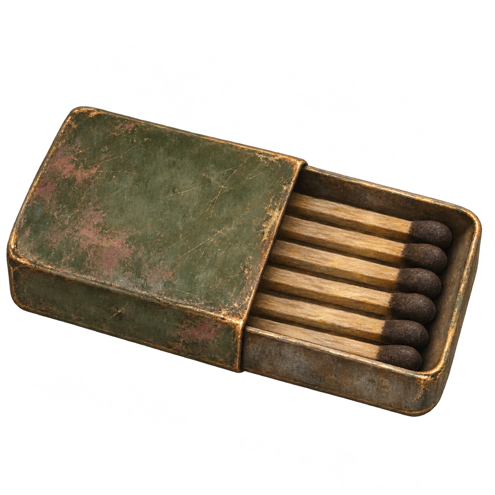
Жестяной коробок на полке у печи, потёртый по углам. Внутри шесть серных спичек с тёмными головками.
Шесть раз зажечь свечу без другой горящей свечи (в бою — действие). От печи, камина и ламп дома свеча не загорается: пламя дома на воск не перекидывается.
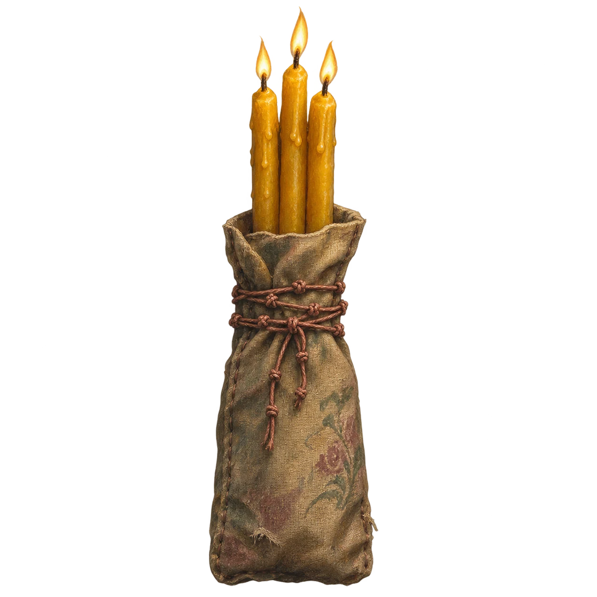
Три тонкие жёлтые свечи в холщовом мешочке, перевязанные ниткой с узелками. Божена носит их со службы в дорожном приюте.
Обычная защита: держатель и двое держащихся. На ударах дом гасит их после обычных свечей, но раньше свечей Урмов. На Лестнице Счёта — как обычные свечи.
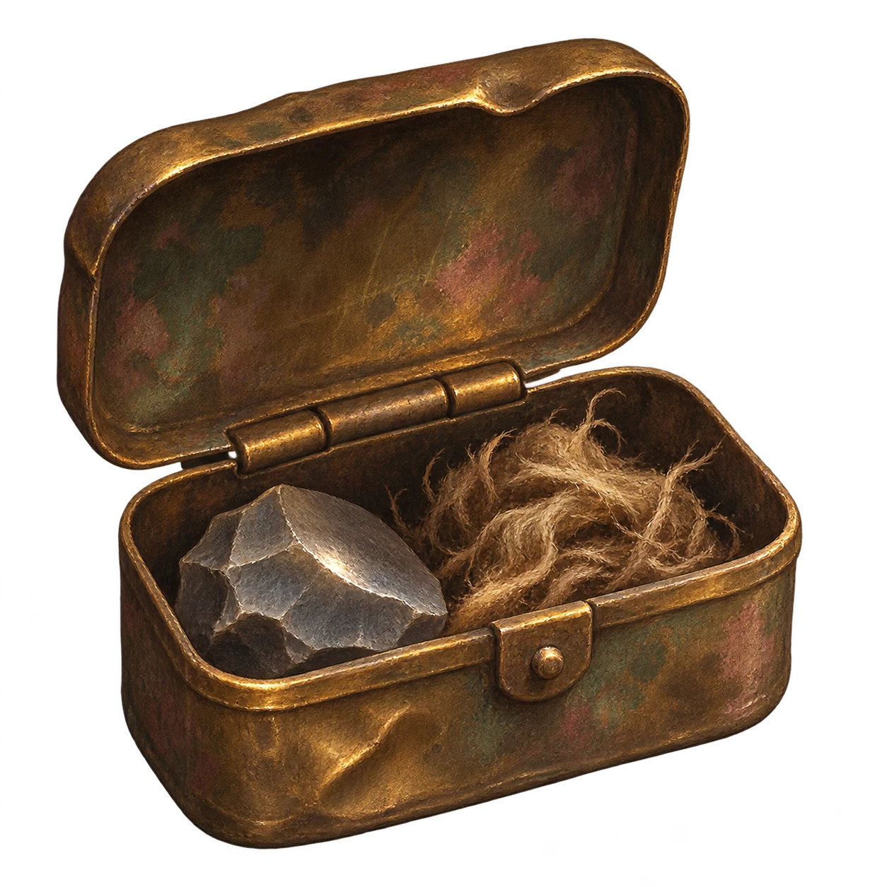
Старое караульное огниво в латунной коробке с вмятиной на крышке. Кремень стёрт до блеска, трут сухой.
Зажечь свечу без другой свечи сколько угодно раз (в бою — действие). Единственный неисчерпаемый огонь отряда: после половины второго, когда все горящие свечи гаснут разом, круг начинают с него.

Короткий белый мел оценщика, завёрнутый в бумажку со столбиком цифр. Им Антон метит заложенные двери.
Метки на дверях. После удара метка на сдвинутой двери исчезает, на остальных остаётся. Кто открывает только двери с целой меткой, не получает отметку «не та дверь».
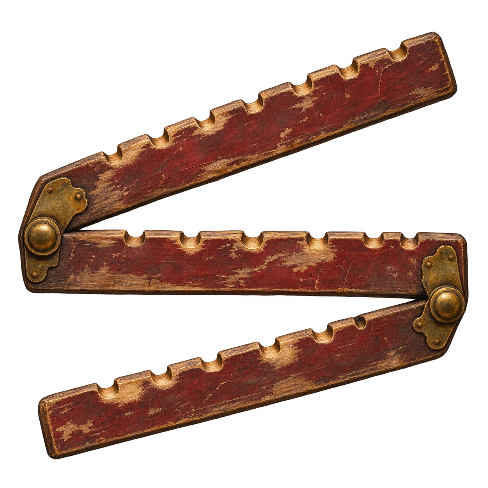
Деревянная складная рейка на медных петлях, с зарубкой на каждую ступень обычного марша. Краска на зарубках стёрта пальцами.
Беата считает ступени вслух: на лестнице все в её ряду и соседних бросают спасбросок против зова Хора с преимуществом. Счёт вслух — не шум. В склепе через решётку и в вечере 5 у открытого шкафа она меряет шахту: три марша, площадки в рядах 10 и 5, если считать от ворот внизу.
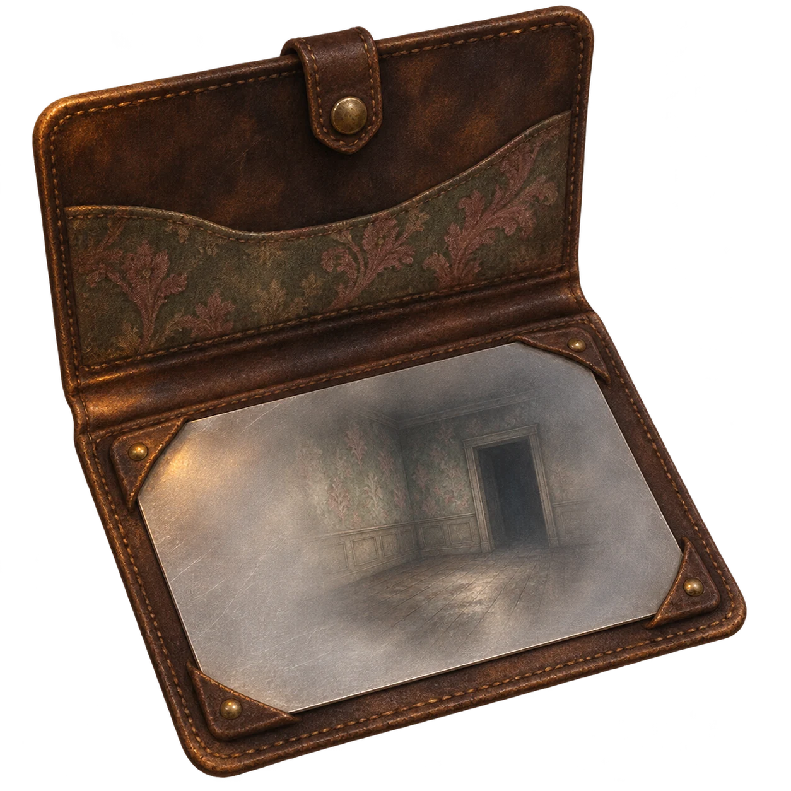
Лист тонкого серебристого картона в кожаной папке. На свету на нём медленно, за минуту, проступает изображение комнаты.
Подержать минуту в комнате — лист проявляет стены, какими они были в полночь: новые двери видны сразу. В вестибюле лист показывает за часами вертикальную шахту и площадки (улика `still-clock`).
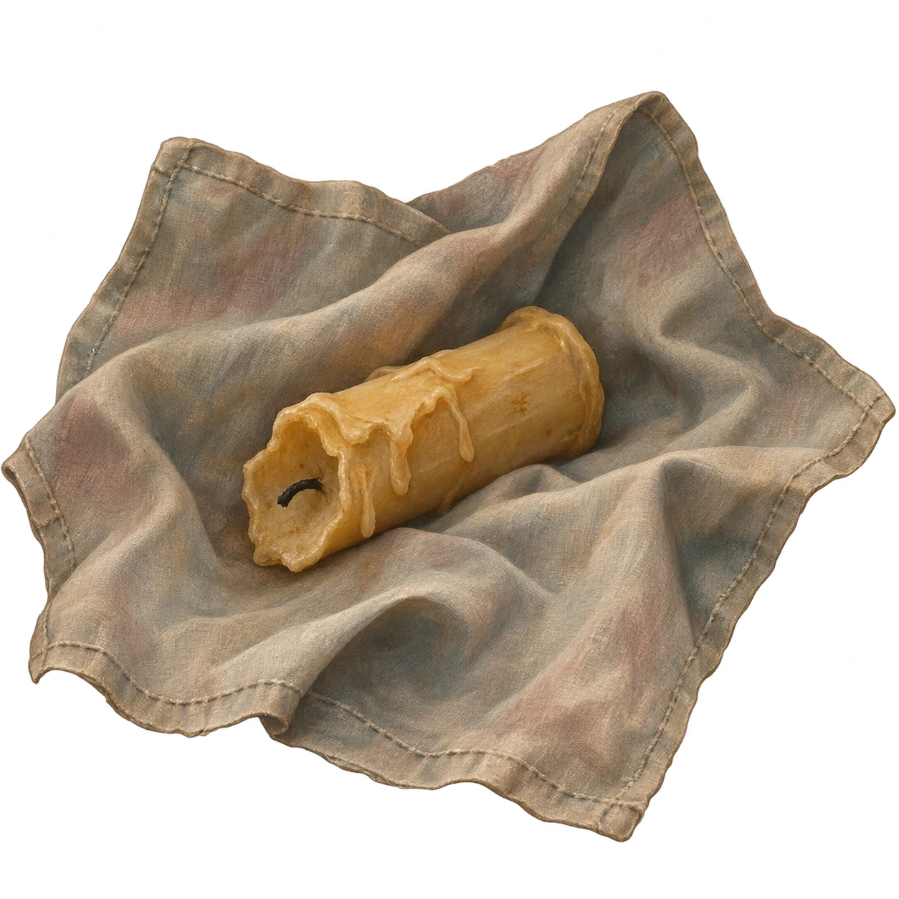
Огарок толщиной в палец, завёрнутый в платок. Воск жёлтый и сухой, фитиль чёрный. Ирина держит свёрток в кармане шали.
Ирина носит его с собой и отдаёт только тому, кто обещает идти последним. Зажжённый на Лестнице Счёта, не задувается Хором: держатель и двое держащихся Хором не хватаются, пока он горит. Слуги и Привратник гасят его как обычную свечу. Зажжённый до шести, гаснет на ближайшем ударе и мёртв.

Толстая книга в коже на пюпитре вестибюля. Страницы за сто девятнадцать лет; первая подписана «Г. Урм, хозяин». Страница этой ночи начата рукой Егора.
Порядок строк — очередь дома (раздатка `threshold-page`): Егор вписал первым только себя, остальные стоят в том порядке, в каком брали перо. Имя можно вычеркнуть у пюпитра: зачёркнутый уходит в конец очереди, а следующий поднимается. На старых страницах — капли воска сверху вниз (улика `book-order`).
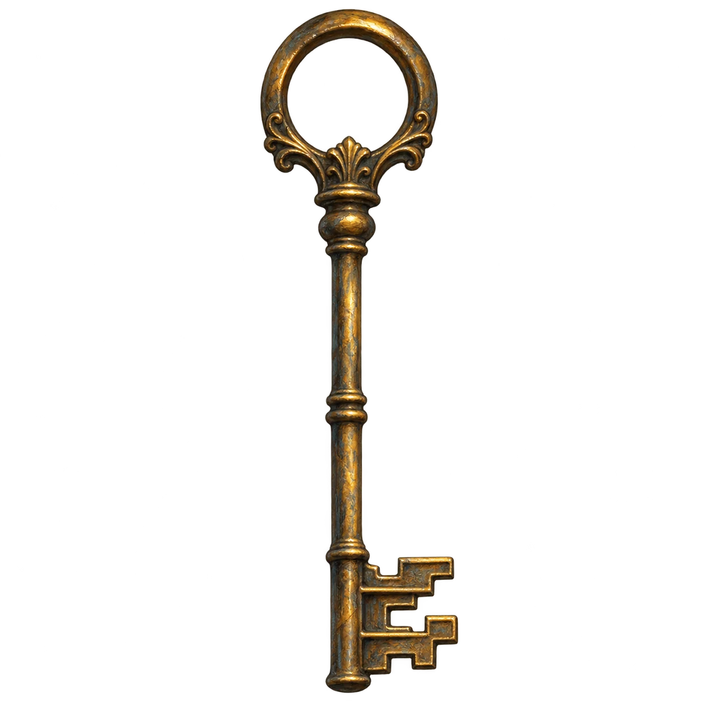
Длинный латунный ключ с бородкой в виде цифры VI. Висит на гвозде над верстаком в часовой мастерской.
Открывает шкаф часов в любую минуту, но до шести за маятником пустая холодная шахта. С ключом шкаф на бое шести открыт сразу. Без него кто-то в раунде 1 действием разбивает стекло и дверцу; в начале своего хода раунда 2 человек стоит в рядах 12–14 и ходит полным пределом, а Хор при любом голоде выходит с южного края и в конце раунда 1 уже идёт. Исчезает вместе с мастерской на ударе 05:00, если его не забрали.
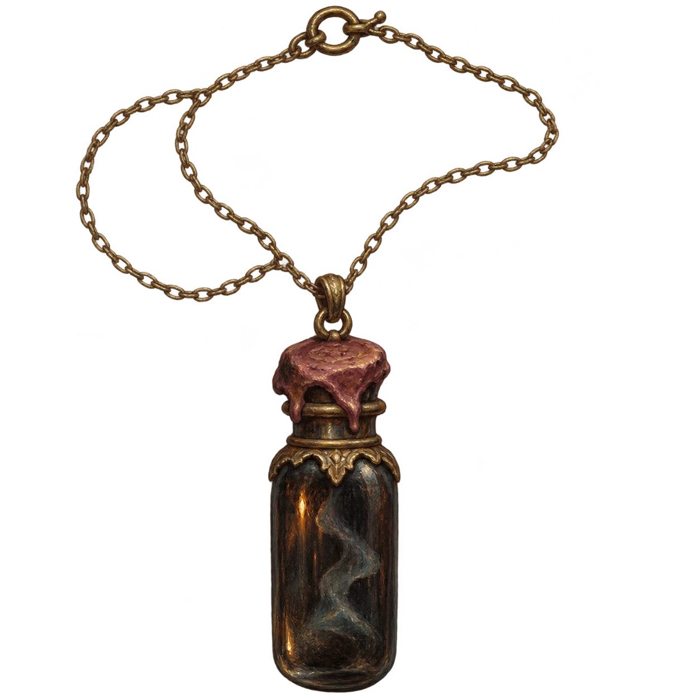
Флакон тёмного стекла на цепочке, пробка залита воском. Эвелина носит его на шее поверх шерстяного жилета.
Капля усыпляет взрослого на два часа: спящий не шумит и в темноте не кричит, но его надо нести (на лестнице — несомый). Эвелина даёт капли только по просьбе того, кто понесёт спящего; против воли человека в первый раз отказывает, во второй соглашается и называет цену вслух. На героя против воли его игрока капли не действуют никогда.
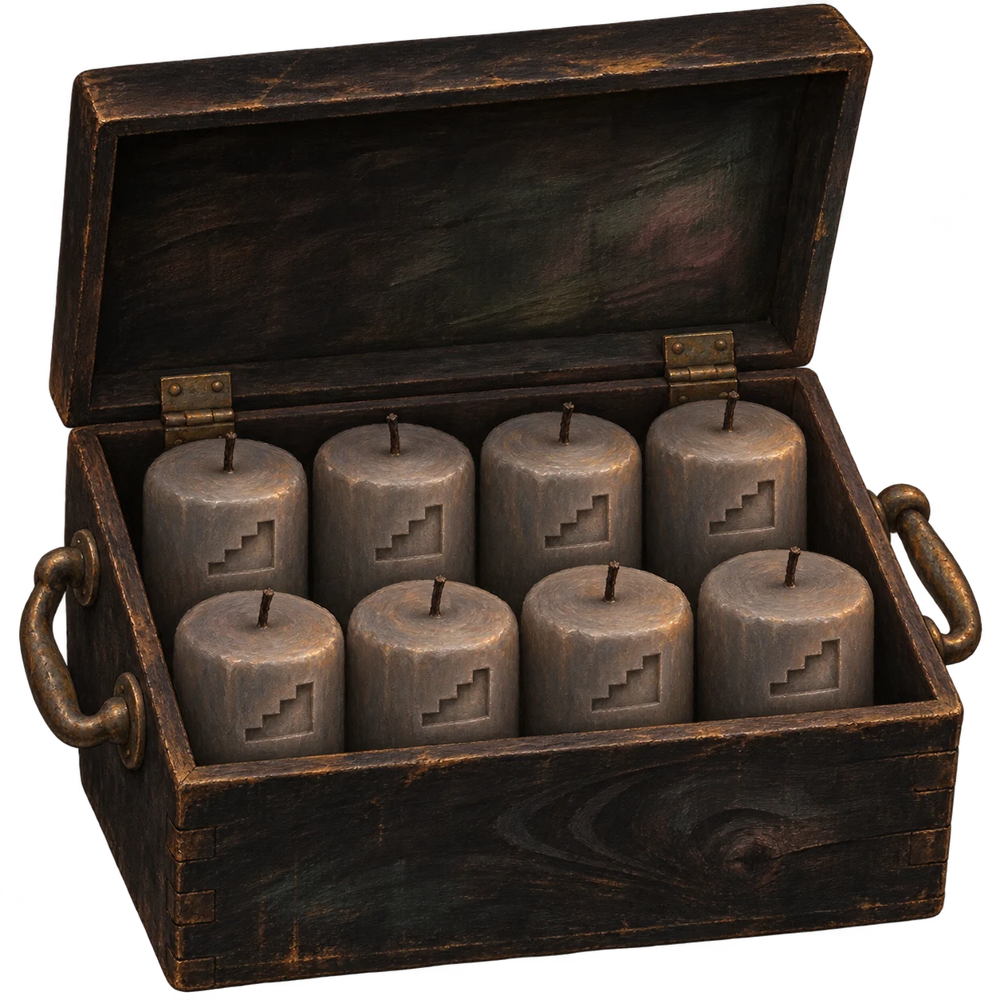
Ящик чёрного дерева на алтаре склепа. Внутри восемь толстых свечей серого воска с гербом-лестницей; ящик тяжёлый, ручки стёрты.
Восемь свечей, которые держат только держателя и одного держащегося (не двоих). На часовых и получасовых ударах дом гасит их последними, после всех других горящих свечей, и не больше одной за удар. Слуги, Хор на лестнице и Привратник гасят их как обычные. Ящик несёт один, без бега (в бою скорость 15 футов); соседнему герою его можно передать свободно, раз в ход. Его выносят во встрече «Сторожа ниш»; ящик, оставленный в склепе, исчезает со склепом на ударе 05:00.
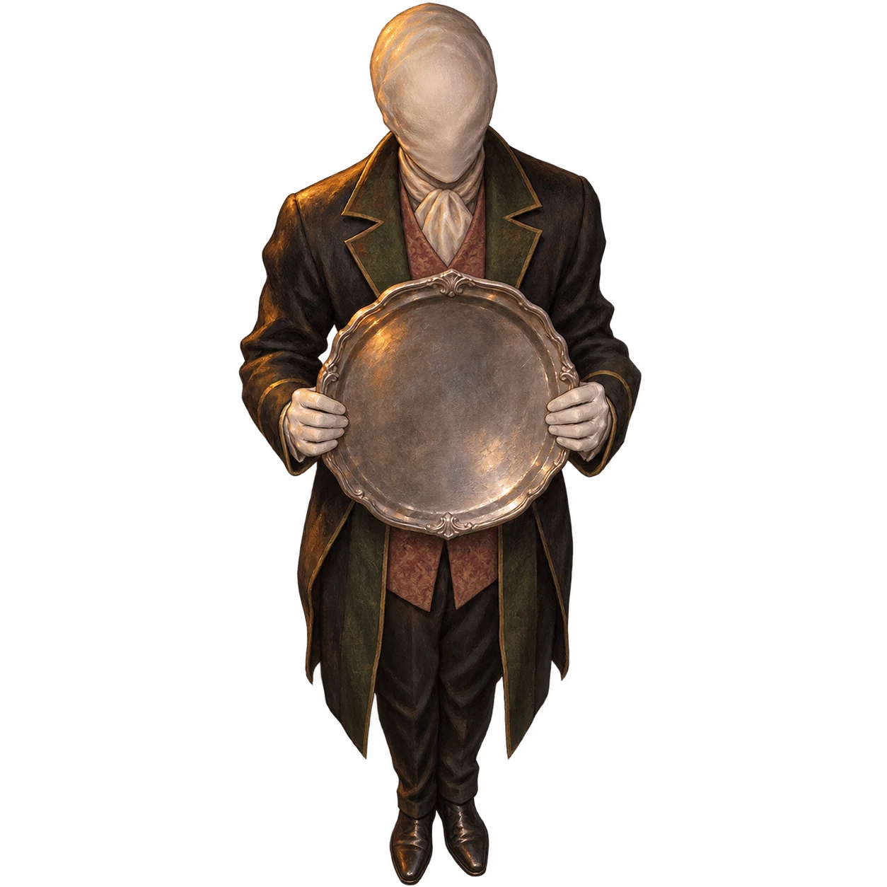
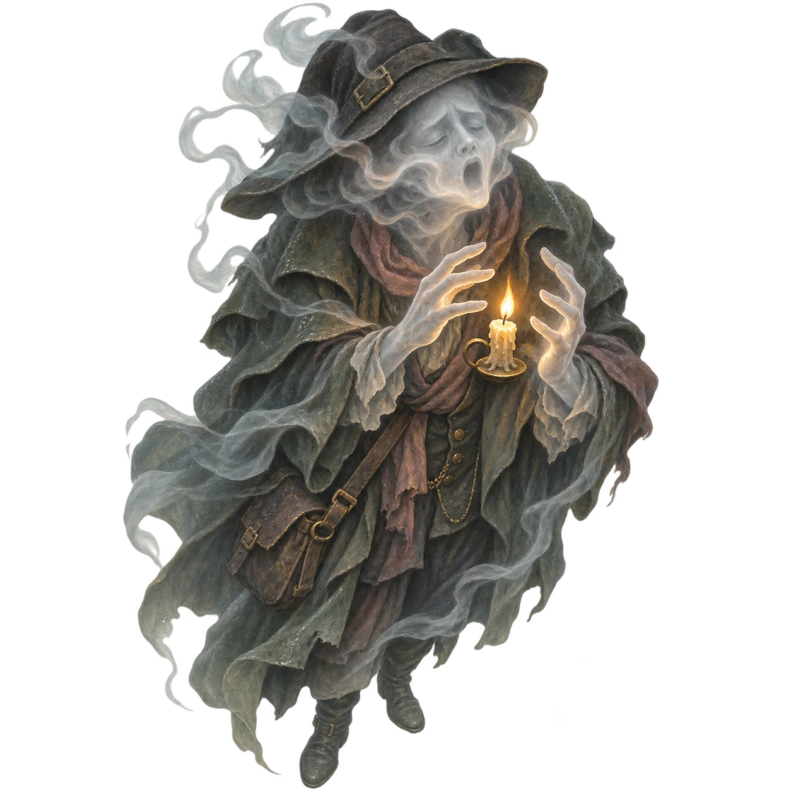
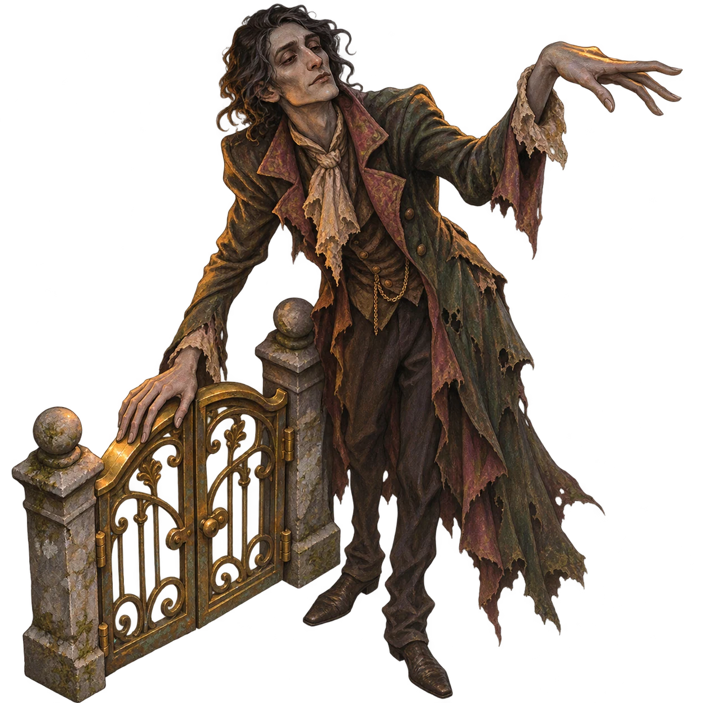
Условия: О ≥ В − 2: из вошедших в полночь вышли все, кроме двух или меньше (вырванные из Хора и прошедшие ворота считаются вышедшими). При 5/6/7/8 героях: О ≥ 10/11/12/13. В — сколько людей вошло в вестибюль в полночь: герои за столом и семь гостей (Гаспар не гость). О — сколько людей прошло нижние ворота, считая вырванных из Хора. Ведущий объявляет исход одной фразой и читает только его текст. [Н] — тот, кто вышел не собой (правило встречи «Шесть меток»): из вышедших — последний, кого Хор держал и отпустил; если таких нет — из вышедших тот, кого Хор позвал на лестнице последним (в раунде 6 — первый по очереди из позванных); иначе — последний прошедший ворота. Ведущий подставляет имя.
Серый свет ложится на дно рва. Вы стоите на сухой траве и считаете друг друга вслух — по одному, как ступени. Счёт сходится почти весь. Наверху усадьба стоит без единой двери: ни крыльца, ни окон, только гладкие обои камня. [Н] считает вместе со всеми, и на своём номере голос у него (у неё) раздваивается: говорят двое, потом трое, ровно, на одной ноте, как трубы под полом. [Н] не замечает этого и улыбается вам. Догоревший огарок в его (её) руке вдруг загорается сам, и пламя тянется вниз, к земле.
Цена: Кто-то из вышедших унёс в себе голос дома. Забранные этой ночью и невырванные остались в Хоре; их ниши в склепе теперь не пустые.
Условия: О от В − 5 до В − 3. При 5/6/7/8 героях: О 7–9 / 8–10 / 9–11 / 10–12. В — сколько людей вошло в вестибюль в полночь: герои за столом и семь гостей (Гаспар не гость). О — сколько людей прошло нижние ворота, считая вырванных из Хора. Ведущий объявляет исход одной фразой и читает только его текст. [Н] — тот, кто вышел не собой (правило встречи «Шесть меток»): из вышедших — последний, кого Хор держал и отпустил; если таких нет — из вышедших тот, кого Хор позвал на лестнице последним (в раунде 6 — первый по очереди из позванных); иначе — последний прошедший ворота. Ведущий подставляет имя.
Ворота во рву закрываются за последним, кто успел, и становятся камнем. Сверху, из глухой стены усадьбы, Хор допевает имена тех, кто остался: по одному, полностью, как в Книге порога. Вы узнаёте каждый голос. [Н] шепчет эти имена на долю секунды раньше Хора — и знает одно лишнее имя, которого никто из вас не слышал.
Цена: Половина ночи осталась в доме. Дом сыт на одну ночь; в следующую осень на дороге снова будут письма чужим почерком.
Условия: О ≤ В − 6, в том числе никто. При 5/6/7/8 героях: О ≤ 6/7/8/9. В — сколько людей вошло в вестибюль в полночь: герои за столом и семь гостей (Гаспар не гость). О — сколько людей прошло нижние ворота, считая вырванных из Хора. Ведущий объявляет исход одной фразой и читает только его текст. [Н] — тот, кто вышел не собой (правило встречи «Шесть меток»): из вышедших — последний, кого Хор держал и отпустил; если таких нет — из вышедших тот, кого Хор позвал на лестнице последним (в раунде 6 — первый по очереди из позванных); иначе — последний прошедший ворота. Ведущий подставляет имя. Если ворота не прошёл никто, [Н] нет: читайте последнюю фразу исхода о последнем забранном.
Вас мало на дне рва, и рассвет кажется слишком тихим. Наверху нет ни звука: Хор больше не поёт, потому что ему больше не надо звать. [Н] встаёт первым, поднимает с земли пустой фонарь Гаспара и, не оборачиваясь, идёт вверх по склону к дороге — встречать карету. Если не вышел никто, это делает последний забранный: дом сам выпускает его на рассвете, и он стоит у моста с фонарём, в чужом сюртуке, и говорит голосом Гаспара: «Входите. Ночлег без платы».
Цена: Дом взял почти всех. Тот, кто ушёл к дороге, не вернётся к вам: следующую карету дом позовёт его голосом.
Авторская подготовка и техническая проверка не заменяют живую игру. Длительность, сложность и эмоциональное восприятие пока не проверены группой. Иллюстрации (52) созданы генерацией изображений OpenAI в одном стиле; тактические схемы построены из данных встреч. Полный каталог содержит материалы ведущего — публиковать его целиком для игроков нельзя.